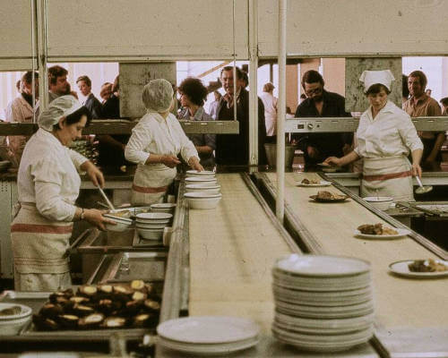

Wie alles begann
Das Tartuffel startete 1953 als Kantine für die Arbeiter eines der größten Stahlwerke im damaligen Deutschland.
Nach den entbehrungsreichen Kriegsjahren wurde es wieder möglich, eine reichhaltige und erschwingliche Kost zu servieren. Somit erfreute sich die Kantine sehr schnell großer Beliebtheit unter den Mitarbeitern wie auch den Gästen von außerhalb
Mit dem Niedergang der Schwerindustrie in unserer Region, wurde leider auch der Betrieb des hiesigen Stahlwerks eingestallt und somit ging die Ära der Kantine zuende.
Die Betriebsgebäude wurden ihrem Schicksal überlassen und verfielen über die Jahre mehr und mehr, bis nur noch Ruinen übrig waren.
Doch dies sollte sich ändern!